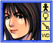
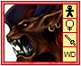
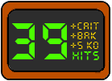
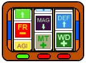

5.1 Interface
5.1.1 Battler Window
 
The Battler Window provides information about a Battler when in battle. There are three forms of Battler Windows:
Compressed, Standard and Extended.
All windows have a Mugshot of the Battler. The Mugshot shows an animated gif with state changes. This shows their reaction to
certain situations in battle (getting hurt, getting a crit etc.) and when the character incurs a Status Effect.
5.1.2 Round Timer
5.1.3 Metasync Gauge
The Metasync Gauge is shared by the whole party. It fills up gradually over the course of the battle. Its progress can be sped up by the following:
- High Party/Enemy C.C
- High amt. DAM dealt by Enemy/Ally
- Enemy/Ally KO
5.1.4 Combo Counter
The C.C. is located to the left of the screen above the Player’s Metasync Gauge and to the right of the screen below the Enemy’s Overdrive Gauge. The C.C. increments every uninterrupted hit to a single ally/enemy or group of allies/enemies. The higher the C.C. value the greater the Metasync boost at the end of the combo. In addition, getting criticals (crits) and exploiting elemental weaknesses (breaks) will add a bonus to the multiplier.
5.1.5 Buff Reels
Both parties have a set of three slot reels called Buff Reels. The slots grant (de)buffs upon their respective party. At the begining of every round, these reels are rolled to give three random (de)buffs to their party. The Player can choose to stop to the reels one by one (from left to right) with [SPACEBAR] or let them come to rest on their own. The light under the reels indicates whether they are spinning (red) and when they have come to rest (green).
(De)buffs of the same kind can stack, hence they have a more potent effect on either party.
Getting three of the same (de)buff or getting three of the same color give 2 Tiers Metasync boost.
During the battle, these buffs can be replaced by certain Dynamic Skills.
Here are some Metasync Actions that affect the Buff Reels:
1 Tier Metasync Gauge to roll their enemy's reels again.
2 Tiers Metasync Gauge to roll the party's reels again.
3 Tiers Metasync Gauge to break both party's reels making (de)buffs invalid for the rest of the round.
5.2 Battle System
5.2.1 Match Types
There are many types of matches. Many of which have different restrictions.
Duel: 1-on-1. 30s rounds. Tag team disabled. Restock disabled. Only between Avatars.
Deathmatch: 3-on-3. 60s rounds. Tag team enabled. Restock enabled.
Brawl: All-on-All. 120s rounds. Tag team enabled. Restock enabled.
Miniboss: 3-on-1. 60s rounds. Tag team disabled. Restock disabled.
Boss: 3-on-1. 60s rounds. Tag team enabled. Restock disabled.
Superboss: All-on-1. 30s rounds. Tag team enabled. Restock disabled.
Standoff: 1-on-All. 300s rounds. Tag team disabled. Restock enabled.
5.2.2 Rounds
5.2.3 Tag Team
In battle, it is possible switch between any of the three characters on your party. Note the character you are playing is automatically the Party Leader. If the character you are playing is KO'd, it switches to the next character in line. Depending on the type of match, you may be able to switch in/out party members with any available members of your crew between rounds. If a character is damaged or incurred a status effect, switching it out of the party will allow it recover some health and regain normal status for future rounds.
5.2.4 Status Effects
Status Effects are changes in a unit's condition that may hamper or enhance their performance in battle. A unit can have one Status Effect at a time. The Status Effect needs to either wear off or cured before a new one can be attained. The unit's current Status Effect is indicated on the unit's Mugshot window on the HUD. The unit carries over its Status Effect to the next round.
| Icon | Name | Description |
|---|---|---|
| Normal(NOR) | No effect on attributes or condition. | |
| Toxin (TOX) | Unit loses X% HP every Y seconds. | |
| Delirium (DEL) | Unit loses X% MP every Y seconds. | |
| Rejuvenate (REJ) | Unit gains X% HP every Y seconds. | |
| Energize (ENE) | Unit gains X% MP every Y seconds. | |
| Speechless (SPC) | Unit is unable to use magic skills. | |
| Fracture (FRA) | Unit is unable to use physical skills. | |
| Immobilize (IBZ) | Unit is unable to move. | |
| Bloodlust (BLS) | Control lost over unit. Attacks nearest target. | |
| Neutralize (NEU) | Unit absorbs next magical skill. | |
| Anticipate (ANT) | Unit avoids next physical skill. | |
| Quickstep (QCK) | Unit moves faster. | |
| Calm (CLM) | Metasync gauge goes slower. Unit less likely to get interrupted. | |
| Panic (PNC) | Metasync gauge goes faster. Unit more likely to get interrupted. | |
| Knock Out (TKO) | Unit is unable to act until revived. |
5.2.5 (De)buffs
All (de)buffs are noted in the table below:
| Icon | Name | Description |
|---|---|---|
| STR + | Party STR X 1.5 | |
| STR - | Party STR X 0.5 | |
| DEF + | Party DEF X 1.5 | |
| DEF - | Party DEF X 0.5 | |
| AGI + | Party AGI X 1.5 | |
| AGI - | Party AGI X 0.5 | |
| EVA + | Party EVA X 1.5 | |
| EVA - | Party EVA X 0.5 | |
| MAG + | Party MAG X 1.5 | |
| MAG - | Party MAG X 0.5 | |
| RES + | Party RES X 1.5 | |
| RES - | Party RES X 0.5 | |
| POT + | Party POT X 1.5 | |
| POT - | Party POT X 0.5 | |
| IMM + | Party IMM X 1.5 | |
| IMM - | Party IMM X 0.5 | |
| LT + | LT DAM (to party) X 0.5. LT DAM (by party) X 1.5 |
|
| LT - | LT DAM (to party) X 1.5. LT DAM (by party) X 0.5 |
|
| AR + | AR DAM (to party) X 0.5. AR DAM (by party) X 1.5. |
|
| AR - | AR DAM (to party) X 1.5. AR DAM (by party) X 0.5 |
|
| WT + | WT DAM (to party) X 0.5. WT DAM (by party) X 1.5 |
|
| WT - | WT DAM (to party) X 1.5. WT DAM (by party) X 0.5. |
|
| WD + | WD DAM (to party) X 0.5. WD DAM (by party) X 1.5. |
|
| WD - | WD DAM (to party) X 1.5. WD DAM (by party) X 0.5 |
|
| MT + | MT DAM (to party) X 0.5. MT DAM (by party) X 1.5. |
|
| MT - | MT DAM (to party) X 1.5. MT DAM (by party) X 0.5. |
|
| FR + | FR DAM (to party) X 0.5. FR DAM (by party) X 1.5. |
|
| FR - | FR DAM (to party) X 1.5. FR DAM (by party) X 0.5 |
|
| EL + | EL DAM (to party) X 0.5. EL DAM (by party) X 1.5 |
|
| EL - | EL DAM (to party) X 1.5. EL DAM (by party) X 0.5 |
|
| DK + | DK DAM (to party) X 0.5. DK DAM (by party) X 1.5. |
|
| DK - | DK DAM (to party) X 1.5. DK DAM (by party) X 0.5. |
Buff Reels is a mechanic to give an added element of strategy to battles in order to get the best performance, but aren't crucial to one's success in the game.
5.2.6 Terrain Effects
5.2.7 Reward System
Before a battle, both sides can wager up to three items. If you win, you will get the items the opposing team has wagered and one bonus item. If you lose, you will lose those items and any ecrys fused to them forever. The higher the total rank of your items in comparison to those of your opponents', the greater your odds of getting a better bonus item.
For example,
You wager: 1 Rank E, 1 Rank D, 1 Rank C
They wager: 1 Rank F, 1 Rank E, 1 Rank D
Rank difference: +1
Hence, you have a chance at gwtting a bnus item of Rank B. Note the type of item recieved uis random. Also note that Customized items are half a rank higher than non-Customized items.
Ecrys rewards depend on battle performance. Factors include:
- Highest Combo Count (+)
- # of Breaks/Crits (+)
- Amt. of DAM dealt (+)
- Time taken to finish battle (-)
- # of Junctions executed (-)
- # of KO'd allies (-)